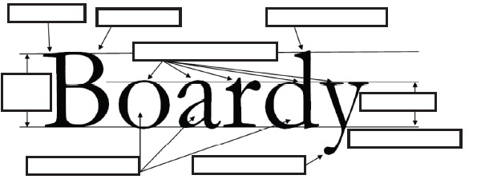

welcome to Effect of Typography design on Readability

After performing this experiment
1.You will observe the time taken by you for different type of paragraph with 6 combination of 3 font type (Times New roman, Verdana, Arial) and 3 font size (10, 12, 14) and can compare which is suitable for you.2.You can compare your time taken for reading a type of paragraph with average time taken by different user and compare your results.

India has emerged as the fastest growing personal computer (PC) user in the Asia pacific region. We are experiencing a shifting of media: from the printed paper to the computer screen. This transition is modifying the process of how we read and understand a text. Research in human computer interfaces aims at a natural interaction between a user and an application system. Typography is the art and technique of arranging type in order to make language visible. The arrangement of type involves the selection of typefaces, point size, line length, leading (line spacing), adjusting the spaces between groups of letters (tracking) and adjusting the space between pairs of letters (kerning). Type design is a closely related craft, which some consider distinct and others a part of typography. Font type and size characteristics play an important role in understanding the complexities of visual information in human-computer interface. It has been well documented that different typefaces or fonts carry different connotations and have different influences on the readability, assimilation, interpretation and impact of the words and concepts they represent. Every font is created by using basic four elements of font which are line, weight orientation and size. There is a very little difference between an aesthetically appealing and unappealing font and these differences are created by changing these four elements. These elements not only add to the aesthetic part of the font but also affect the readability of the individual. Previously researchers have investigated that for different font type and size individual’s reading time for same type of paragraph changes and it add to the mental workload of the individual.
Previous Study on Font Type and Font Size
The effect of font type on readability from a computer screen was investigated by several investigators. Some researchers had found no differences in the reading speed and comprehension among the three fonts except preference for Georgia over TNR [1]. Increased legibility of Serif font than Sans serif font was observed from the study of Grant and Branch [2]. Subjects preferred Sans serif fonts more compared to Serif fonts. Bernard et al.[3] and Tullis et al. [4]. The effect of font size on readability from a computer screen was investigated by a numerous researchers. Mills and Weldon [6] reported that smaller size characters produced faster reading than larger characters. Geske [7] hypothesized that 14 point type would be more legible than 12 point type, which would in turn be faster than 10 point type. Bernard et al. [5] investigated how different font sizes affect actual and perceived readability for elementary level children. The children showed a preference for larger fonts.
- 1. Boyarski D, Neuwirth C, Forlizzi J, Regli SH. A study of fonts designed for screen display. In: Proceedings of CHI 1998; 87-94.
2. Grant MM, Branch RM. Performance differences between serif fonts and sans serif fonts in an on-screen reading task. Paper presented at the International Visual Literacy Association 2000; Ames, Iowa.
3. Bernard M, Mills M, Frank T, McKown J. Which font do children prefer to read online? Usability News 2001. [Online] http://psychology.wichita.edu/surl/usabilitynews/3W/fontJR.htm
4. Tullis TS, Boynton JL, Hersh H. Readability of Fonts in the Windows Environment (Interactive Poster). Proceedings of ACM CHI Conference on Human Factors in Computing Systems 1995; 2: 127-128.
5. Bernard M, Fernandez M, Hull S. The Effects of Line Length on Children and Adults' Online Reading Performance. Usability News 2002.
6. Mills M, Weldon L. Reading text from computer screens. ACM Computing Surveys (CSUR) 1987; 19(4), 329-357.
7. Geske J. Readability of body text in computer mediated communications: Effects of type family, size and face. Retrieved October 17, 2000, from http://www.public.iastate.edu/~geske/ scholarship.html
- 1. Be alert you will see a comprehension on the screen.
2. Click start as soon as you start reading the paragraph.
3. Click stop when you stop reading the paragraph.
4. Click next to go to the next page with different font type and size and repeat the experiment for every font type and size availaible.
5. Proceed to see the result.

To go to experiment page click here

- 1. Identify fonts that have been wrongly displayed
(a) Times New Roman: ________________
(b) Arial : _______________________
(c) Courier: ____________________
(d) Verdana: _____________________
(e) Century Gothic : __________________
2. Find the significance of following terms in a typeface design.
(a) baseline, (b) x-height (c) counter (d) ascender, (e) descender, (f) bowl, (g) terminal (h) ligature (i) stem
Name the above elements in the following word

1. Choose six words of your choice another than the examples given below. Arrange each word to express its meaning in a 6 x 6 inches square composition.
You may vary the size, spacing, placement and orientation of the letters. You may execute your project by tracing letters, cutting and pasting photocopied letters, using a computer or any combination of these methods.e.g.
2. Type a word and make two copies, pasting-to-back twice to create a stack of three. Select center word and give it a White Stroke of 3 pts. Select the rearmost word and give it a colored stroke of 6 pts. See the effect of strokes.

- 1. Boyarski D, Neuwirth C, Forlizzi J, Regli SH. A study of fonts designed for screen display. In: Proceedings of CHI 1998; 87-94.
2. Grant MM, Branch RM. Performance differences between serif fonts and sans serif fonts in an on-screen reading task. Paper presented at the International Visual Literacy Association 2000; Ames, Iowa.
3. Bernard M, Mills M, Frank T, McKown J. Which font do children prefer to read online? Usability News 2001. [Online] http://psychology.wichita.edu/surl/usabilitynews/ 3W/fontJR.htm
4. Tullis TS, Boynton JL, Hersh H. Readability of Fonts in the Windows Environment (Interactive Poster). Proceedings of ACM CHI Conference on Human Factors in Computing Systems 1995; 2: 127-128
5. Bernard M, Fernandez M, Hull S. The Effects of Line Length on Children and Adults' Online Reading Performance. Usability News 2002.
6. Mills M, Weldon L. Reading text from computer screens. ACM Computing Surveys (CSUR) 1987; 19(4), 329-357.
7. Geske J. Readability of body text in computer mediated communications: Effects of type family, size and face. Retrieved October 17, 2000, from http://www.public.iastate.edu/~geske/ scholarship.html